Коммуникационное оборудование¶
Один из действительно ценных аспектов Reticulum — это возможность использовать его практически на любом мыслимом типе коммуникационной среды. Типы интерфейсов, доступные для настройки в Reticulum, достаточно гибки, чтобы охватить использование большинства доступных проводных и беспроводных коммуникационных устройств, от десятилетиями используемых модемов пакетной радиосвязи до современных систем миллиметрового диапазона.
Если у вас уже есть или вы эксплуатируете какое-либо коммуникационное оборудование, очень высока вероятность, что оно будет работать с Reticulum сразу после установки. Если это не так, можно обеспечить необходимую связку с очень небольшими усилиями, используя, например, PipeInterface или TCPClientInterface в сочетании с кодом, таким как TCP KISS Server от simplyequipped.
Также очень легко написать и загрузить пользовательские модули интерфейсов в Reticulum, что позволяет вам общаться практически с чем угодно, что вы можете себе представить.
Хотя такая широкая поддержка и гибкость очень полезны, изобилие вариантов иногда может затруднить понимание, с чего начать, особенно когда вы начинаете с нуля.
В этой главе будет описано несколько разумных начальных путей для запуска реальной функциональной беспроводной связи с минимальными затратами и усилиями. Будут рассмотрены две основные категории устройств: RNodes и радиостанции на основе WiFi. Кроме того, будут кратко описаны другие распространённые варианты.
Знание того, как использовать всего несколько различных типов оборудования, позволит вам с лёгкостью создавать широкий спектр полезных сетей.
Комбинирование типов оборудования¶
При проектировании и построении сети полезно комбинировать различные типы соединений и оборудования. Один из полезных шаблонов проектирования — использовать высокопроизводительные соединения точка-точка на основе WiFi или радиосистем миллиметрового диапазона (с направленными антеннами с высоким усилением) для магистрали сети и использовать RNodes на основе LoRa для покрытия больших территорий связью для клиентских устройств.
RNode¶
Надёжные и универсальные цифровые радиотрансиверные системы дальнего радиуса действия обычно либо очень дороги, сложны в настройке и эксплуатации, труднодоступны для приобретения, энергоёмки, либо всё это одновременно. В попытке облегчить эту ситуацию была разработана трансиверная система RNode. Важно отметить, что RNode — это не одно конкретное устройство от одного конкретного производителя, а открытая платформа, которую любой может использовать для создания совместимых цифровых трансиверов, подходящих для их нужд и конкретных ситуаций.
RNode — это универсальное, совместимое, маломощное и дальнобойное, надёжное, открытое и гибкое устройство радиосвязи. В зависимости от компонентов, оно может работать на множестве различных частотных диапазонов и использовать множество различных схем модуляции, но чаще всего, и для целей этой главы, мы ограничим обсуждение RNodes, использующими модуляцию LoRa в общих диапазонах ISM.
Избегайте путаницы! RNodes могут использовать LoRa в качестве модуляции физического уровня, но они не используют и не имеют ничего общего с протоколом и стандартом LoRaWAN, обычно используемым для централизованно управляемых IoT-устройств. RNodes используют чистую модуляцию LoRa, без каких-либо дополнительных протокольных накладных расходов. Все высокоуровневые функции протокола обрабатываются непосредственно Reticulum.
Создание RNodes¶
RNode был разработан как система, которую легко воспроизвести во времени и пространстве. Вы можете собрать функционирующий трансивер, используя общедоступные компоненты и несколько инструментов с открытым исходным кодом. Хотя вы можете проектировать и создавать RNodes полностью с нуля по вашим точным спецификациям, в этой главе будет объяснён самый простой подход к созданию RNodes: использование распространённых плат разработки LoRa. Этот подход можно свести к двум простым шагам:
Приобретите одну или несколько поддерживаемых плат разработки
Установите прошивку RNode с помощью автоматического установщика
Как только прошивка была установлена и подготовлена скриптом установки, устройство готово к использованию с любым программным обеспечением, поддерживающим RNodes, включая Reticulum. Устройство можно использовать с Reticulum, добавив RNodeInterface в конфигурацию.
Поддерживаемые платы и устройства¶
Для создания одного или нескольких RNodes вам нужно будет приобрести поддерживаемые платы разработки или готовые устройства. Следующие платы и устройства поддерживаются автоматическим установщиком.

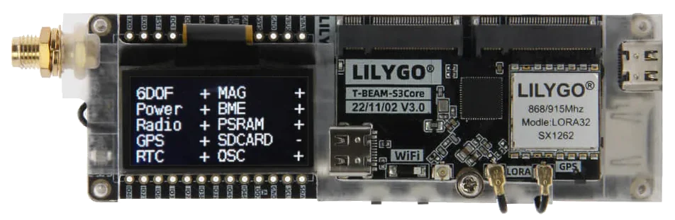
LilyGO T-Beam Supreme¶
Трансиверная ИС Semtech SX1262 или SX1268
Платформа устройства ESP32
Производитель LilyGO

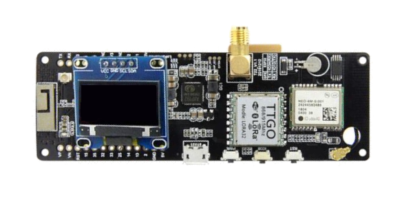
LilyGO T-Beam¶
Трансиверная ИС Semtech SX1262, SX1268, SX1276 или SX1278
Платформа устройства ESP32
Производитель LilyGO

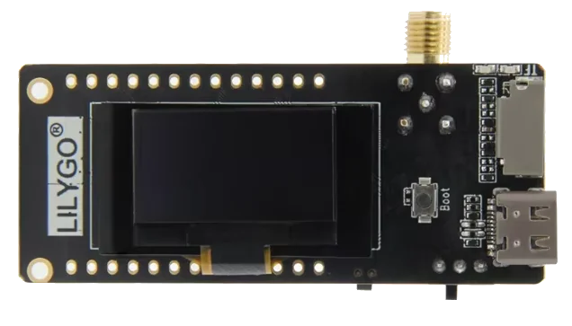
LilyGO T3S3¶
Трансиверная ИС Semtech SX1262, SX1268, SX1276 или SX1278
Платформа устройства ESP32
Производитель LilyGO

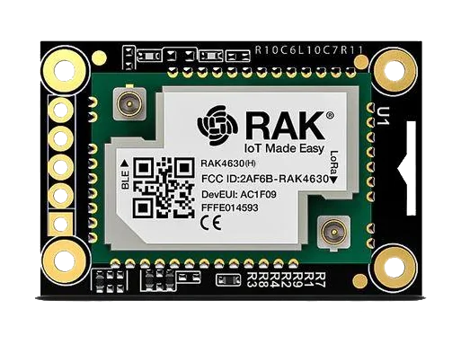
Платы на базе RAK4631¶
Трансиверная ИС Semtech SX1262 или SX1268
Платформа устройства nRF52
Производитель RAK Wireless

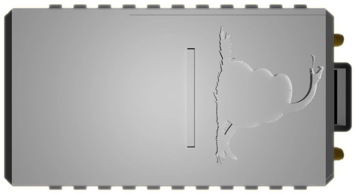
OpenCom XL¶
Трансиверные ИС Semtech SX1262 и SX1280 (двойной трансивер)
Платформа устройства nRF52
Производитель Liberated Embedded Systems

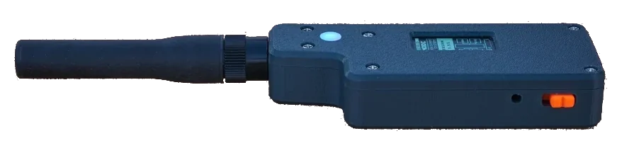
Unsigned RNode v2.x¶
Трансиверная ИС Semtech SX1276 или SX1278
Платформа устройства ESP32
Производитель unsigned.io

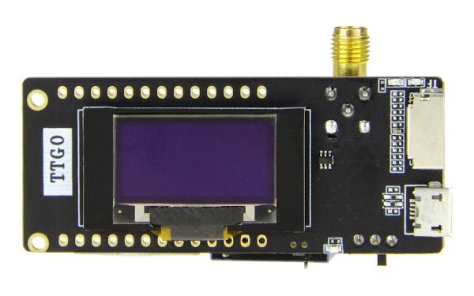
LilyGO LoRa32 v2.1¶
Трансиверная ИС Semtech SX1276 или SX1278
Платформа устройства ESP32
Производитель LilyGO

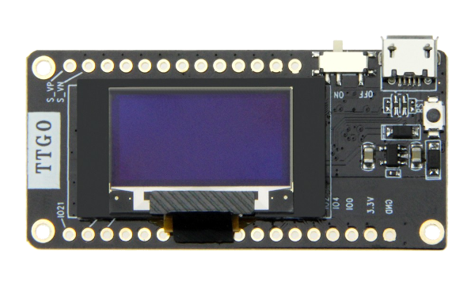
LilyGO LoRa32 v2.0¶
Трансиверная ИС Semtech SX1276 или SX1278
Платформа устройства ESP32
Производитель LilyGO

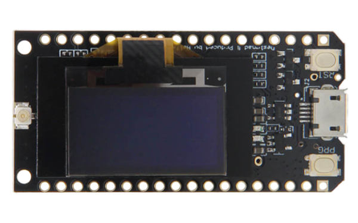
LilyGO LoRa32 v1.0¶
Трансиверная ИС Semtech SX1276 или SX1278
Платформа устройства ESP32
Производитель LilyGO

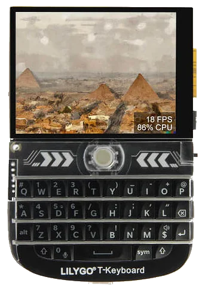
LilyGO T-Deck¶
Трансиверная ИС Semtech SX1262 или SX1268
Платформа устройства ESP32
Производитель LilyGO

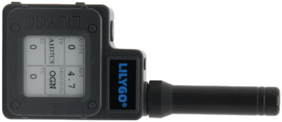
LilyGO T-Echo¶
Трансиверная ИС Semtech SX1262 или SX1268
Платформа устройства nRF52
Производитель LilyGO

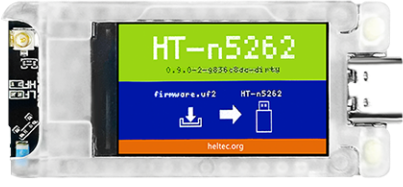
Heltec T114¶
Трансиверная ИС Semtech SX1262 или SX1268
Платформа устройства nRF52
Производитель Heltec Automation

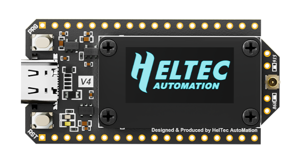
Heltec LoRa32 v4.0¶
Трансиверная ИС Semtech SX1262
Платформа устройства ESP32
Производитель Heltec Automation

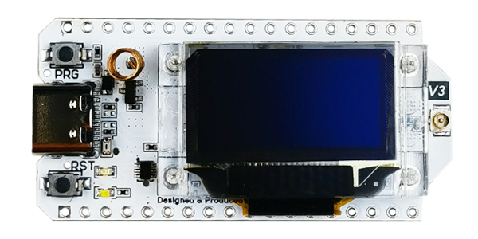
Heltec LoRa32 v3.0¶
Трансиверная ИС Semtech SX1262 или SX1268
Платформа устройства ESP32
Производитель Heltec Automation

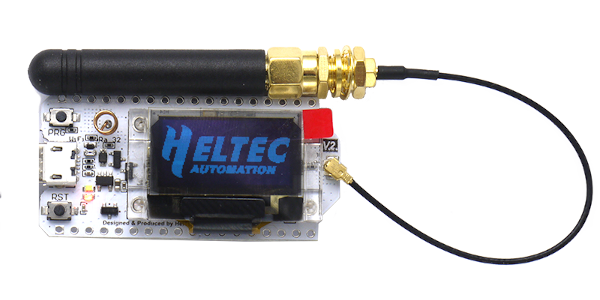
Heltec LoRa32 v2.0¶
Трансиверная ИС Semtech SX1276 или SX1278
Платформа устройства ESP32
Производитель Heltec Automation
Установка¶
Как только вы приобрели совместимые платы, вы можете установить прошивку
RNode с помощью утилиты
конфигурации RNode. Если вы установили Reticulum в вашу систему, программа rnodeconf
уже будет доступна. Если нет, убедитесь, что Python3
и pip
установлены в вашей системе, а затем установите Reticulum с помощью pip:
pip install rns
После завершения установки пора начинать установку прошивки на ваши устройства.
Запустите rnodeconf в режиме автоматической установки
следующим образом:
rnodeconf --autoinstall
Утилита проведёт вас через процесс установки, задавая ряд вопросов о вашем оборудовании. Просто следуйте указаниям, и утилита автоматически установит и настроит ваши устройства.
Использование с Reticulum¶
Когда устройства были установлены и подготовлены, вы можете использовать их с Reticulum, добавив соответствующую секцию интерфейса в конфигурационный файл Reticulum. В конфигурации вы можете указать все параметры интерфейса, такие как последовательный порт и параметры радиоэфира.
Оборудование на основе WiFi¶
С Reticulum можно использовать все виды оборудования на основе WiFi, как ближнего, так и дальнего радиуса действия. Любой тип оборудования, который полностью поддерживает bridged Ethernet через интерфейс WiFi, будет работать с AutoInterface в Reticulum. Большинство устройств будут вести себя так по умолчанию или позволят это через параметры конфигурации.
Это означает, что вы можете просто настроить физические соединения устройств на основе WiFi и начать общаться через них, используя Reticulum. Нет необходимости включать какую-либо IP-инфраструктуру, такую как DHCP-серверы, DNS или подобное, при условии, что доступен хотя бы Ethernet, и пакеты прозрачно передаются через физические устройства на основе WiFi.

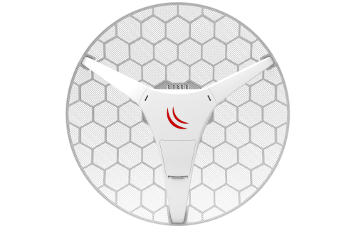

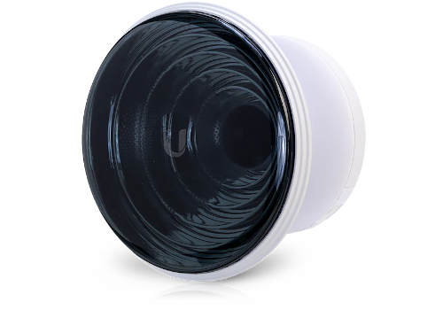
Ниже приведён список примеров WiFi (и подобных) радиостанций, которые хорошо работают для высокопроизводительных соединений Reticulum на больших расстояниях:
Этот список ни в коем случае не является исчерпывающим и служит лишь несколькими примерами радиооборудования, которое относительно дёшево, обеспечивая при этом большую дальность и высокую пропускную способность для сетей Reticulum. Как и во всех других случаях, Reticulum также может сосуществовать с IP-сетями, работающими одновременно на таких устройствах.
Оборудование на основе Ethernet¶
Reticulum может работать через любой тип оборудования, способный предоставить коммутируемую среду на основе Ethernet. Это означает, что всё, от простого Ethernet-коммутатора до оптоволоконных систем и радиомодемов с интерфейсами Ethernet, может использоваться Reticulum.
Среде Ethernet не требуется иметь какую-либо IP-инфраструктуру, такую как DHCP-серверы или настроенную маршрутизацию, но если такая инфраструктура существует, Reticulum будет просто сосуществовать с ней.
Для использования Reticulum через среды на основе Ethernet, как правило, достаточно
использовать встроенный AutoInterface. Этот интерфейс также работает
через любые виртуальные сетевые адаптеры, такие как устройства tun и tap в
Linux.
Последовательные линии и устройства¶
Использование Reticulum через любой тип сырой последовательной линии также возможно с помощью SerialInterface. Этот тип интерфейса также полезен для использования Reticulum через коммуникационное оборудование, предоставляющее интерфейс последовательного порта.
Модемы пакетной радиосвязи¶
Любой модем пакетной радиосвязи, предоставляющий стандартный интерфейс KISS через USB, последовательный порт или TCP, может использоваться с Reticulum. Это включает виртуальные программные модемы, такие как FreeDV TNC и Dire Wolf.